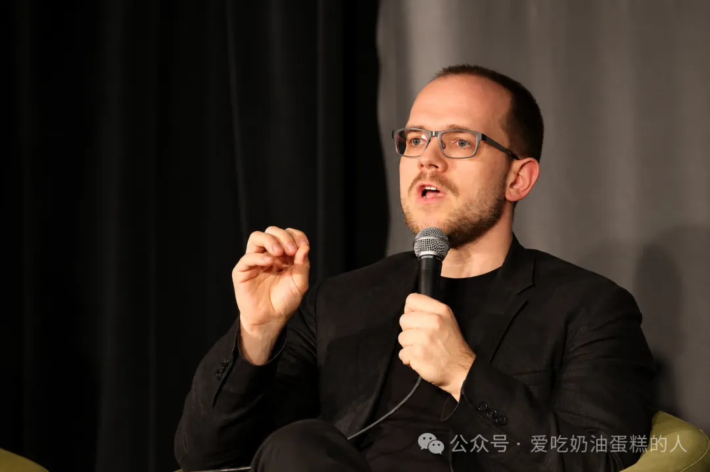

「讲座约16800字」
主讲：叶甫根尼·莫洛佐夫（Evgeny Morozov）
主持：蕾雅·乌琵（Lea Ypi）
时间：2026年10月5日
地点：伦敦政治经济学院

文献来源： 本文根据莫洛佐夫于2026年10月5日在伦敦政治经济学院所作讲座 Socialism after AI（《人工智能之后的社会主义》）的英文视频字幕整理、翻译并校订，包含讲座及问答内容。为了控制篇幅，对主持人开场白部分的介绍性辞令做了少量删节。
译者导读
━━━━◆━━━━
这场讲座讨论人工智能给社会主义提出的理论难题。莫洛佐夫先从中美技术竞争、人工智能泡沫与平台公司的债务压力谈起，指出把帝国主义红利转化为分配基金，并不能构成社会主义的人工智能方案。他随后转向技术使用者的经验：当公共制度失灵，人们为什么会在商业人工智能中感到自己重新获得了行动能力？传统的社会主义经济计算论争聚焦资源配置，忽略了人怎样在技术活动中生成新的需要、判断力与技能。讲座因此提出「简化的社会主义」与「复杂性的社会主义」的区分，并在现场问答中讨论就业、开源、生态代价和阶级意识。
主持人开场白
━━━━◆━━━━
◆蕾雅·乌琵（主持人）：
━━━━━━
晚上好，欢迎来到伦敦政治经济学院。我叫蕾雅·乌琵，是伦敦政治经济学院拉尔夫·米利班德（Ralph Miliband）政治学与哲学讲席教授。今晚能在这里欢迎我们的演讲嘉宾莫洛佐夫博士，我非常高兴。他将谈论「人工智能之后的社会主义」。莫洛佐夫是一位白俄罗斯裔、意大利籍作家。2018年，《政客》杂志将他列为欧洲最具影响力的28人之一。
这也是我们刚刚创设的「资本主义的替代方案」项目的首场活动。这个跨学科研究项目立足于伦敦政治经济学院，研究政治制度、所有制形式以及国内和国际层面的民主模式，借此探讨资本主义之外还有哪些可能的社会安排。项目的一项宗旨，是把有关资本主义及其替代方案的学术研究同公共讨论联系起来。
◆加文·雅各布森（《赤道》编辑）：
━━━━━━
在《人工智能之后的社会主义》一文中，莫洛佐夫提出了一个直指当代政治想象核心的挑战。他指出，左翼有太多人仍然把技术视为中性的工具。而他主张，人工智能时代配得上社会主义之名的事业，必须承认技术本身就是集体自我形成和政治斗争的首要场所，是一项主动创造世界的工程。
考虑到这些论点，以及技术如何改变人的行动能力、规定自由的边界，我们不妨追问：对当下境况最敏锐的诊断，究竟来自哪里？我觉得今晚呈现出了一幅颇有意思的图景。莫洛佐夫来自白俄罗斯，蕾雅来自阿尔巴尼亚。按照传统欧洲地理想象，这两个地方被轻率地划入「边缘」；然而，恰恰因为他们的思想形成于国家社会主义实验的阴影之下及其余波之中，身处西方中心自满的正统观念之外，他们才得以反转局面。还有其他来自前苏联国家、同样不可或缺的声音，例如伊万·克拉斯捷夫（Ivan Krastev）、布兰科·米拉诺维奇（Branko Milanović）、丹妮拉·加博尔（Daniela Gabor）、格奥尔基·德尔卢吉安（Georgi Derluguian）和扬·杰隆卡（Jan Zielonka）等思想家。他们已经成为诊断西方资本主义危机最敏锐、最有生命力的一批人。他们所处的位置赋予他们难得的清醒，也让他们能从历史中理解权力与人的行动能力。
拒绝被大西洋世界的自我迷恋所束缚，时常从边缘出发，去发现更加清楚的真相——这正是《赤道》所追求的精神。现在，请大家一起欢迎叶甫根尼上台。
讲座正文
━━━━◆━━━━
◆人工智能泡沫与技术帝国主义
━━━━━━
非常感谢蕾雅和加文，也谢谢聚集在这个温暖会场里的各位。希望待会儿我们讨论这些有争议的问题时，现场气氛还能更热烈一些。嗯，很高兴回到伦敦政治经济学院。我已经有一阵子没在这里演讲了。今天来了这么多人，实在让我有点惊讶。我不知道大家究竟是热爱社会主义，还是热爱人工智能，又或者以为我今晚的题目是在讲科幻小说。不过我可以向你们保证，今晚几乎不会有科幻小说的内容。我也没有突然变成过去大概十五年里一直遭到我批评的那类技术乌托邦主义者。
嗯，我确实认为，即便人工智能呈现出我们眼前这种令人沮丧的资本主义形态，它仍然给社会主义事业提出了许多关乎其存亡的思想挑战。社会主义者最好开始认真回答这些问题，不论人工智能领域的竞争与地缘政治角逐采取的资本主义形式有多么丑陋。所以我今晚想做的，是激起左翼一场迟迟没有展开的讨论：究竟哪些问题、哪些维度过去遭到了忽视，而人工智能的到来突然将它们推到了眼前？
为了消除可能的误解——我绝不是要把资本主义人工智能改头换面后拿来为我们所用，或者宣称可以将它重新夺回来——也许我应该先从丑陋的一面谈起，希望大家至少能在这一点上达成一致：我们眼下所经历的人工智能热潮，已经非常接近泡沫。它正在制造最恶劣的技术帝国主义，加剧资本主义内部早已存在的种种新自由主义化和金融化趋势。这个巨大的人工智能泡沫破灭之后，并没有任何看得见的、可信的社会主义会自行从废墟中出现。我绝对没有这样的意思。
不过，理解人工智能整体上正在发生什么，仍然至关紧要。因为它终究会使社会主义事业更加艰难，绝不会让事情变得更容易。如果我作出相反的保证，那就是不诚实。嗯，读财经报刊、关注新闻的朋友都知道，我们很可能正经历有史以来规模最大的地缘政治与地缘经济竞争之一，而人工智能正处在竞争的中心。这是一场美国和中国之间的较量。我们同样知道，今天涌入人工智能领域的资金，远远超过当年铁路繁荣以及历史上许多大型技术泡沫与基础设施建设狂潮吸纳的资金。而这一切发生得比过去更快。我们正生活在这样一个世界里：在经历多年、甚至几十年的经济停滞之后，资本家手中能够拿来重新启动世界经济的连贯方案，到头来只剩下人工智能这一个。对资本家来说，人工智能意味着什么、许诺了什么，已经相当清楚了。至于他们到底怎样靠它赚钱，倒还说不准。与此同时，同样清楚的是，人工智能的成本会极其高昂。数据中心以及背后整套基础设施的能源消耗，绝不是什么小数目，而且仍在持续增长。
与此同时，我们也看到中美竞争不断加剧。大家大概已经注意到，不同国家、不同公司在不同时间推出什么模型、定什么价格，会让竞争在不同阶段以不同速度推进。但在我看来，美国如今正在动用它对盟友所掌握的一切地缘政治杠杆，尽最大可能遏制中国。
◆帝国主义的红利
━━━━━━
你们可能在新闻标题中见过一个叫「硅和平」（Pax Silica）的东西。这恐怕是过去十二个月里华盛顿发起的最有分量的地缘政治行动之一。说到底，就是要把美国的所有盟友聚拢到华盛顿身后，确保关键材料、稀土、数据以及其他资源的供应，通过各种协议，让中国无法取得同样的基础设施，进而划定分明的阵营，塑造人工智能的未来。我们正在看到地缘政治集团的形成，可以这样说。而随之产生的一个主要后果，我想，就是连社会主义者也会忍不住动心：能不能把这种地缘政治施压所制造的财富转变为一笔红利，再分配给自己的选民？
我说的当然就是围绕人工智能设立主权财富基金的构想。几个月前，伯尼·桑德斯（Bernie Sanders）这样的进步派人士提出了它。这个想法是，我们既然能够利用美国相对于中国的领先地位和地缘政治优势，美国公司的股票估值又依然高高在上——当然，它们之所以能够这样，是因为美国利用制裁、光刻机出口限制等手段压制中国公司——那么，为什么不能拿出一部分钱，在美国设立一只主权财富基金，再把收益分配给那些对人工智能感到非常愤怒的人呢？对吧？
所以，如果看看当下的主流社会主义，这大体就算是对人工智能的「进步主义方案」了：从美国帝国主义那里分一点好处，设法把它变成钱，再把收益分下去，然后管它叫社会主义。这当然是一个相当不幸的发展。它暴露了人们在思考人工智能时地缘政治分析的匮乏，也暴露了想象力的不足。
而且千万别误会，这还不只是压制中国的问题。美国当然也在利用华盛顿的权力威逼自己的盟友，威逼任何拥有资源的国家，让它们接纳美国的数据中心，开采关键矿产和原材料，从根本上巩固美国企业的实力。这也正是这些企业能获得如此疯狂的股票估值的原因。如果有一天中国终于造出一款性能与英伟达相当的芯片，美国人工智能公司的估值肯定会遭遇暴跌；那个所谓主权财富基金的价值当然也会遭到彻底摧毁。只要真正想一想，这套方案究竟给人们提供了什么，局面就令人相当沮丧。
嗯，这里当然还有各种次生影响。比如养老基金这样的机构，本身就深深绑在人工智能泡沫上。世界经济其他部分根本提供不了养老基金以及包括主权财富基金在内的机构所期待的回报，于是便出现了一种奇怪甚至荒诞的间接关联：这些机构能不能取得所需要的收益，竟然与这个全球人工智能巨兽的扩张相联系。这样一来，工人的利益、公民的利益，也通过迂回的渠道与人工智能泡沫捆绑在一起。当我们试图将人工智能作为政治问题和地缘政治问题提出来时，必须想到这一点。
中国的情形当然也没有截然不同。不过，确实还有一线希望，因为中国开发出了向全世界开放的开源模型。这样，其他国家，包括全球南方国家，都可以使用这些模型，减少对美国供应商的依赖。只是这样的局面究竟能维持多久，并不清楚。中国企业同样受到投资者和股票市场的要求所支配。那些开源项目本身并不怎么赚钱。迄今为止，中国公司挣钱的主要来源是算力，而非人工智能模型。但它们还愿意补贴多久，让人工智能作为全球公共品存在，用来抗衡美国的扩张？这并没有明确答案。
于是，欧洲、拉丁美洲等其他国家和地区，都被置于非常脆弱、依附于人的境地。考虑到投入的规模，它们在结构上根本不具备与美国或中国供应商竞争的能力。它们拿不到先进芯片；而开发模型、兴建数据中心，以及人工智能所要求的一切其他基础设施，其代价又高昂到连欧洲工业巨头也负担不起。因此，我们基本上只能看到中美之间的这场地缘政治斗争，其他国家则必须在两国试图建立的两个联盟之间寻找自己的位置，被争取加入其中某一方。所以我认为，眼下的局势对任何形式的社会主义都谈不上有利，而且未来十年左右，我们还会看到另一种景象：那些背负了惊人债务的公司，为了让现金流勉强维持在水面之上，会拼命挣扎。说到底，OpenAI、Anthropic 和其他公司如果想在五年、七年或十年内实现一定程度的盈利，唯一的办法就是迫使个人、用户、政府和各种机构不断购买更多服务。未来五到十年会发生什么，其实已经很清楚了。这些公司将对政府和其他公共机构施加非常强硬的压力，催促它们把人工智能纳入福利国家的每一个机构、国防部门和基础设施，以偿付过去已经欠下、今后还要更加肆无忌惮地举借的债务。
你们必须理解，这些公司的融资规模以绝对数字衡量已经大到惊人的地步，甚至开始挤占主权国家的债务融资空间。毕竟，这些企业的财务状况相对不错，因此信用评级也很高。结果是连主权国家都开始追问，科技巨头如此大规模地发债，会不会让国家自己也更难在资本市场上融资。
◆在制度失灵之后，人们转向人工智能
━━━━━━
不过，我真正想说的是，尽管存在这一切——我希望已经讲清楚了，我个人在结构层面完全看不到什么令人鼓舞的前景——我们仍然应该保持开放的头脑。我们应当以不同于对待火车、铁路、机场或其他技术的方式来对待人工智能。因为我认为，它所形成的人与技术之间的关系非常不一样，对政治制度、普通用户，以及一般意义上的政治，尤其是左翼政治，也会带来不同的后果。
左翼有一条非常容易、也非常懒惰的路可走，那就是把任何从使用人工智能中获得些许安慰的人，都说成受某种伪理性、虚假意识或者意识形态幻觉支配。我认为，实际发生的情况大体并非如此。我们看到的东西更加奇特。几十年的新自由主义政策，早已掏空了大多数制度的意义，又给它们加上形形色色不合理的要求，包括审计文化和毫无节制的量化考核。这些政策给公民、父母、邻居、工人等所有人都施加了压力。现在，人工智能竟然以一种极其古怪的方式，帮助他们弥补、缓解了这些压力。我认为，如果看不到这一点，就是犯了一个错误。对于许多在日常生活中使用人工智能的人来说，它确实承担了某些政治和社会职能。而在过去，承担这些职能的可能是政党、工会、社区协会或其他机构。在我看来，一个基本事实很难否认：这些人之所以转向人工智能，是因为其他一切都辜负了他们。人工智能有种种缺陷，会消耗能源，还会带来其他问题，可它至少帮助人们维持生活，甚至让他们仍能作为社会中正常行动的一员，而这个社会本身，说得轻一点，也已经有些乱套了。
因此，我们应该采取更社会学的态度，而不是先从规范立场出发把这些现象一概否定，应该观察其中出现的悖论。从这个角度说，我确实认为这里存在一点「斯德哥尔摩综合征」。我们当中许多人对来自硅谷或北京的俘虏者产生了同情，甚至心甘情愿地向他们付费，尽管心里清楚，这很可能让自己几个月或几年后陷入更加可怕的境地。这类悖论需要研究，不能随手归结为奇怪的意识形态混乱。
一旦把人工智能放回当代制度时常失灵的环境中来看，我们就会发现，它确实具有一些让人感到自己更有行动能力的特征。人工智能的悖论在于：一边是它背后的商业模式，以及推动它实现价值增殖的要求，力图包办你的一切。因此，它根本没有打算像伦敦政治经济学院这样的学校，或者其他教育、文化与福利国家机构那样，培养你的任何技能。对吧？想想就明白了。人工智能公司为什么想让你每个月交上一笔钱？原因其实很简单：它们要成为一个毫无摩擦的服务提供者，让你迅速消费一项服务，勾掉任务清单上的一个方框，再进入下一项任务。这个方框可以是家庭作业，也可以是要写的文章，还可以是你为孩子、朋友做的任何事。
其基本想法是，让你尽快进入一项活动，又尽快退出，既不掌握任何技能，也不理解这个领域的任何知识。你付钱，就是为了把这件事做得更快、更好。对吧？因此，它被包装成一种服务。人们默认它不需要产生其他后果和影响。你不是去发展才华、技能或理解力；你只是花钱购买服务，找到一种办法，应付某个要求你交差的制度。
但另一方面，我们都知道，要让人工智能真正做出你想要的东西，并没有那么简单。因为它从设计之初就被要求尽可能抽象、尽可能通用，所以不可能立刻交出完美结果。你就不得不培养某些技能和能力，摸索这个黑箱究竟怎样运作：自己输入的东西与系统输出的东西究竟有什么关系。这样一来，你不可避免地会在头脑里逐渐形成一个关于系统运作的模型，在使用过程中学会一些东西。对吧？尽管公司自己更希望你不要追问它怎样运转、由什么驱动、这是不是提供服务的最优方式，这一切学习却几乎是偶然发生的。
而我认为，只要当前生成式人工智能和大语言模型还以这种方式运行，就几乎不可能消除这个悖论。原因恰恰在于它们需要尽可能快地扩大规模，因此必须提供足够通用、用途足够开放的服务。而这种开放性又恰恰决定了它们不可能把你要求的任务做得十全十美。所以你必然会去了解它们怎样工作，并在过程中学会一些技能。嗯，这个起点其实不算坏。
◆私人订阅的陷阱：无法社会化的人工智能
━━━━━━
问题当然会再次出现。当你在这些系统里待得久一些，就会渐渐明白，技能和基础设施都需要被拿来实现价值增殖，于是系统如何把能力交到你手中，便受到了许多额外限制。迟早你会发现，自己向人工智能、大语言模型提出的问题，家人、邻居和朋友也都在问。大家被锁在一场永无止境的循环里：为得到彼此非常相似的问题的答案，反复发出代价高昂的查询。这不仅消耗大量能源，还毫无必要地把本可集体解决的问题变成了个人购买的服务。事实上，如果采取更集体化的社会解决方案，以及基础设施层面的解决方案，效果会好得多。对吧？
但很明显，在现有人工智能的价值增殖范式之下，我们甚至无法开始认真设想以它为基础建立更加社会化、更加团结互助的制度。部分原因在于，这样做会彻底动摇这些公司的赚钱方式。对吧？于是，所有人都成了个体服务消费者，而这些服务明明迫切需要社会化，迫切需要以公共或社会基础设施的形式提供。我们为它们支付了大量金钱，却没有意识到聊天窗口背后还藏着另一个平行宇宙。对吧？那个世界只向少数付得起远高于普通订阅费用的人开放。
我指的当然是，企业、机构和政府可以用一种完全不同的方式消费人工智能。不是通过聊天窗口——大多数人通过这个受到大量补贴的界面来使用它——而是通过API。你可以购买足够多的词元，搭建一条更加复杂的工作流程。这样，你就无需只同系统聊天，得到三个答案，然后逐渐修改提问，而可以真正建立一套非常复杂的流程，让一个环节的输出成为下一个环节的输入，最后形成一套极其精密的系统。它的花费是普通用户通过聊天界面使用人工智能的十倍。如今，人工智能真正富有创造性的用途，仍然保留给那些财力雄厚、买得起这些服务的人和机构。其他所有人得到的东西，雄心小得多，也平庸、琐碎得多。但是，由于前面说的斯德哥尔摩综合征和其他因素，我们依然会乐在其中，并从中感受到生活其他角落难以获得的创造性行动能力（creative agency）。
这让我得出下面这个结论。如果不追问怎样超越当前商业模式对硅谷所提供的大语言模型和人工智能施加的限制——其中包括必须按词元计数、为每个词元付费——我们就根本不可能看到人工智能在政治、社会与文化上的真正激进潜力。为了看清这些替代性的人工智能系统究竟可以置身何处，我们得先问：在社会主义制度中，我们究竟能用人工智能做什么？
答案不该只限于任务自动化，也不该只是提高生产率，或者不知怎么就让运营、生产变得更有效率。我们需要问的是另一组问题：怎样在人的内部培育新的能力、技能和本领？这些本领连他们自己都不知道需要，却在运用没有预设终点、没有预定用途的系统来处理日常问题时，逐渐发现了它们。
◆社会主义经济计算论争的盲区：效率之外的发现
━━━━━━
这就把我们引向一组不同的问题。社会主义者，至少是其中多少带有乌托邦色彩的派别，过去一直在讨论它们。因为如果你回顾人工智能怎样影响社会主义未来的思考，就会发现，绝大多数讨论都发生在「社会主义经济计算论争」（socialist calculation debate）的框架之内。对于不熟悉这个问题的朋友，这场论争大约始于一个世纪以前。争论的核心始终是，市场和计划哪一种制度更适合进行资源分配。许多新自由主义经济学家都参与过这个问题的讨论。其实在新自由主义经济学家之前，还有马克斯·韦伯，然后是米塞斯、哈耶克等人。他们坚持认为，是市场在分配商品和服务方面具有优势，能够克服知识与信息的不足，实现更有效的资源配置和节约。另一边，社会主义阵营的经济学家，例如奥斯卡·兰格（Oskar Lange），则认为说到底，我们可以把实验与计划适当地结合起来，设计出一套制度，以更加优越、更加理性的方式分配商品和投入，取得期望的产出。
这当然在此后几十年里规定了争论的基本议题。现在，每当人们提到人工智能，尤其是提到社会主义制度下的人工智能，往往仍然是在这个语境中。大家的想法是，过去计划体制由于信息和知识稀缺而遭遇的各种问题，可以借助人工智能、大数据、反馈回路等技术来克服。人工智能能够改善计划，让它更加动态、更加聪明，也能够利用那些原本散乱无序、无人注意、更没有得到使用的数据和知识。
我认为这种看法确实有不少东西值得学习。但归根结底，社会主义者提出这些论点时，完全误读了过去三四十年中资本家，尤其是新自由主义者，究竟把社会主义经济计算论争推进到了什么地方。对于更加老练的新自由主义者而言，市场已经不再关乎商品分配，甚至也不再关乎社会协调。它几乎在现代性或后现代性中取得了一种神学与政治的角色：让作为消费者或企业家的人们尝试不同的生存方式和生活形式，发现自己在同国家机构打交道、遵循种种预先规定和设计的生活方式时无法发现的东西。
因此，在新自由主义之下，市场所承担的职能已经超越了「高效率地分配商品」这一理念。市场几乎成了一套「发现」的基础设施。它让人们发现的不只是信息，还包括目的，最终甚至是意义。
当然，我认为这种愿景有许多地方可以批评。只要看看真实存在的市场实际上怎样运行——我在讲座开始时已经谈了不少人工智能市场的问题——就会看到这一套说法中充斥着神话般的、乌托邦式的宣传与意识形态。但我确实认为，社会主义经济计算论争经过这样的重新界定，社会主义者就很难打赢了。毕竟，新自由主义者自己完全乐于承认，计算机和人工智能终有一天会在高效率组织生产方面做得极其出色，也许甚至能够出色地协调商品供应。但他们会说，这依旧无法解决他们自己在现代性中指出的那些问题，也就是有关意义、发现与实验的问题。人们走进市场时，并不知道自己是谁、究竟想要什么。正是在市场交换、创业、消费以及其他市场活动的过程中，这些东西才逐渐变得明朗。
我觉得这种市场愿景实在难以令人信服，但它确实指向了人心中存在的某种渴望。这种渴望本身并不虚假。资本主义确实向人们许下了这个诺言，尽管它很可能——几乎可以肯定——无法兑现。社会主义应该针对这份承诺，提出自己的替代方案和自己的愿景。
也正是在这里，生成式人工智能和大语言模型才真正进入我们的视野。它们用途开放，允许你尝试不同的生存方式、生活形式和交往形式。由此，我们得以超越那种只把社会主义理解为有效分配投入和产出的观念。我们能够认真面对一个根本问题：人们怎样发展新的技能，怎样形成新的需要，怎样获得新的能力，而文化与技术又怎样不断居间作用于这个循环过程。
◆回到马克思：对象化、占有与人的能力养成
━━━━━━
这当然使我们回到了马克思早期关注的一组问题。他在某种程度上从黑格尔那里继承了这些问题，却把它们引向了与黑格尔非常不同的方向。说到底，那是一组关于对象化、占有和异化的问题。问题在于，作为一个物种——当然，我们可以讨论这个称呼是否恰当——人类究竟怎样把自己的技能、能力和知识对象化为特定工具、知识体系和基础设施？随后又怎样使用这些工具和对象？这些对象怎样进一步向我们显示创造全新意义体系和需要体系的可能？新的需要又怎样引导我们重新发现，或第一次发现，让文化对象化的新方式？如此周而复始，以至无穷。
在我看来，这些问题对那些热衷于分析经济中「硬核问题」的马克思主义者，向来缺乏吸引力。他们要分析资本、研究竞争、理解国家间的较量，等等，也就是我在讲座开头所描述的那些地缘政治局势。结果，这些问题大多留给了马克思主义内部较小的支流，留给研究心理学、哲学的人们。黑格尔主义者承担了其中相当一部分问题。当然，教育学的支流里也有保罗·弗莱雷（Paulo Freire）这样的人物。但总体而言，这些问题始终没有同社会主义经济计算论争及经济问题联系起来。这又解释了为什么，只要看看社会主义者在计算论争中的立场，就会发现他们用来思考问题的基本单位是企业、政府或计划单位，而不是任何意义上的个人。不是工人，肯定也不是用户，更不是公民。社会主义者以生产单位为思考对象，思考企业、官僚机构，却不思考人。
与此同时，新自由主义者采取了恰恰相反的进路。如果你看看他们在社会主义经济计算论争中的立场，就会发现那里满眼都是企业家和消费者，是每个个人承担起一项艰巨的任务：通过彼此之间的「创造性破坏」，制造大量创新和所谓好东西。我并不想暗示，新自由主义者在这场论争中采取这样的策略，是他们犯下了什么错误。事实上，恰恰因为把问题放到个人层次上，他们成功地让自己的方案更有吸引力，并把它放进一套更广泛的正当性论述之中：市场和市场资本主义究竟有什么用？普通人理解和接受这种论述，要容易得多。
社会主义经济计算论争中的社会主义一方，从未发生过相应的变化。它仍然困在生产单位内部：单位根据计划者提供的信息进行实验，或者围绕预算约束作各种尝试，诸如此类。
而我觉得，生成式人工智能特别有意思的地方就在这里。尽管硅谷提供的大语言模型以及中国同行所提供的大语言模型存在种种限制——我希望已经让大家相信，我非常清楚这些限制——但它们却在无意中把马克思主义者和社会主义者忽视的那个维度重新带回议程，也就是「占有」的问题，更准确地说，是对象化、占有和异化的问题。对我而言，这是理解人们使用 ChatGPT 或 Claude 一类工具时究竟发生了什么的一个好办法。
◆复杂性的社会主义
━━━━━━
想一想，归根结底，这样一件工具能把整个人类文明积累的知识——许多马克思主义者会称之为「死劳动」（dead labour）——带到你正在处理的问题面前，而不需要官僚机构、大学或国家的制度性中介。基本上，你独自面对着人类文明迄今为止全部思想和行动的积累。当然，它来自那些公司扫描并放进系统的数以百万计的书籍。这迫使你以一种方式直面这个现实，也让我们看到，这里存在几种可能。
第一种是，你完成了想完成的事，却没有发展任何额外的技能。你获得了完成任务的「能力」（capacity），却没有经历能力的养成（capacitation）。换句话说，你可以在功能上完成眼前任务，却既没有获得理解，也没有培养那些能使自己迈向更高层次、提出更深更大的问题，并因需要的地平线扩展而提出更多要求的技能。或者，你就这样把手头的事情做完，转身继续自己的生活。最终，你变得熟练，所表述的却未必是任务，因为那些任务根本不是出自你的意志或自主性，而是制度体系强加给你的要求。你只是在那里传递这些要求，因为各式各样的机构都指望你交出成果。
另一种可能，是转向一个真正能够形成技能的制度，让社会通过这一过程逐渐变得更加复杂。这就把我们带到一个必须作出选择的两难处境：我们将得到的是「简化的社会主义」（socialism of simplicity），人工智能几乎毫无摩擦地替我们做好一切，还是「复杂性的社会主义」（socialism of complexity）？在后一种社会主义里，每经历一次行动和循环，我们做成的事情会更多，但我们也会不断拓宽眼界，发展新技能，形成理解世界的新方式，并向世界提出更多要求。
当然，我们还必须明白，这一切应当以可持续的方式进行，不能毁掉使这一切成为可能的条件。所以这里说的并非世界上某种极端个人主义的行动能力。它包含着一定的社会性，让你能够判断自己的需要是否与邻居的需要相似，看看能否通过技术联结这些需要，形成一个共同的项目，而无须为每个人分别提供一套私人解决方案。我觉得，社会主义新的思考与想象方式，就可能从这里出现。
但这也把我们带向了一种非常不同的社会主义观念。因为「复杂性的社会主义」必须格外重视教育、技能培养和判断力的养成。让我担心的是，马克思主义绕开了这套更具文化和教育意味的黑格尔式议程，结果，我们便以为自己可以信赖市场制度，甚至也许可以信赖人工智能，让它们占据经济中那些先锋部门。毕竟创新就是在那里发生的，而社会主义者自己没有一套像样的创新理论。至于其他一切，我们只需把周边领域去商品化，例如医疗、住房、教育等等，然后就可以心满意足地靠这套模式生活几十年。这样，我们会得到一个有点像丹麦过去的样子的社会——当然，是还没有实行那些严厉移民政策时的丹麦。
但我很怀疑，这种愿景对人们究竟有多大吸引力。科技公司正在向他们许诺不可能实现的事，而当下的生成式人工智能，尽管提供的行动能力残缺不全，却已经让他们切实感受到了自己能够有所作为。那些自己动手、运用人工智能反击医疗、司法或教育制度中新自由主义过度扩张的人，绝不只是为了挽回制度将使他们承受的某些损失。在这个过程中，他们确实感到了自己有所行动的兴奋。由此养成的任何技能，都不该被轻视。
所以，对我而言，社会主义者更应该问的是：我们究竟能在多大程度上借助人工智能？我说的当然不是拿它当作通向社会主义的桥梁。我们现有的人工智能极其不稳定，正在造成环境破坏，助长帝国主义以及我在开头列出的各种恶果。因此，从这里根本没有一座桥可以通向那里。我们倒是可以拿人工智能来帮助思考，用它来思考社会主义理论与实践中究竟存在哪些缺口。
◆让生产成为自由的场所
━━━━━━
我想，尽管人工智能有这么多缺陷，潜能又遭到严重压抑，这恐怕仍是它所能作出的最有用的贡献。因为归根结底，我认为社会主义者没有投入足够的时间和精力，思考我们究竟怎样培养没有被预先规定好目的和目标的人，甚至包括他们在生产活动中的样子。毕竟，传统论述——马克思的部分著述也包括在内——总是从一道坚固的分界线出发：一边是自由王国，另一边是必然王国。社会主义思想与实践的许多精力，都花在如何安排必然王国上，因为麻烦都在那里。我们在办公室或工厂待完一天，回到家里，进入那个通常被称为自由王国的地方，这时真正的自由和文化生活才开始。
我从来没有觉得这种愿景特别令人振奋。而且我认为它还有一个缺陷：它相当贴切地描绘了异化的资本主义生活，却未必是一幅值得社会主义复制的图景。即便生产中将会有联合生产者作出种种民主决策，我们仍然必须考虑这样一个事实：从事以往所谓「工具性行动」的人，或者在追求特定目标的人，也许会发现自己其实更想追求完全不同的目标，而且想采用完全不同的手段。这些人并不一定需要就此同其他工人展开一场审议式的民主讨论。我们应该找到让他们能够在通常所谓的生产活动中，同时实验目的和手段的办法。新自由主义者谈起创业和企业家时，对解释这种情形毫无困难。一个人原本想通过某些手段实现一个目标，最后却发现自己应该追求完全不同的目标，也应该换一种完全不同的手段。这在他们那里完全说得通。这也解释了，为什么把市场说成赋予人们创造性行动能力和自由的途径，会如此容易获得正当性。
社会主义需要给出自己的对应方案。当然，这不意味着把一切都变成创业活动，更不意味着接受新自由主义的主张，认为创业理性应该无处不在，应该用创业来理解一切。我们应当建立这样的制度：在其中，试验和探索自然而然地发生。而且这种探索不能仅限于文化、艺术和创作领域。那些领域当然适合这样做，但在经济领域，在我们劳动、生产和创造价值的过程中，它也应该同样自然地发生。
这就是一个难题。如果你仍然只从效率着眼，不去考察「效率」本身的历史性，只会按照社会主义经济计算论争的思路，把问题看成生产单位之间的资源分配，再请某个理性计划者分配预算，那这个难题就几乎无从着手。
所以我认为，超越社会主义经济计算论争的正确方向，也许不在于继续幻想人工智能能克服旧式中央计划的缺陷，让计划更动态、拥有更多信息。当然，某种计划始终是必要的，我们不可能摆脱这个要求。但社会主义者在这个维度上已经耗费了足够多的时间。他们真正没有投入足够精力的，是如何借助技术和制度，使人能够不断「生成」、不断「发现」。新自由主义者把这种追求完全归给市场制度，可社会主义者应当为它提出自己的答案。
对我而言，显然市场制度根本不适合完成这项任务，还会带来各种代价和后果。但不能因此就说，人们希望在现代条件下拥有试验与发现机会的愿望，本身是虚假的。绝对不是。如果我们以为可以把这一切统统留给自由王国，指望文化机构完成任务，指望每个人都借助生成式人工智能变成画家、音乐家或影像制作者，而在社会主义生产单位里继续遵循某种工具理性，那就犯了一个巨大的错误。也正是在这里，社会主义者恐怕需要彻底重新审视他们过去怎样用那些便利的二元划分组织自己的思想。无论是必然与自由的划分，使用价值与交换价值的划分，还是劳动与游戏、劳动与交往的划分，这些区分都过多地决定了社会主义者怎样理解自己的事业。就这个意义而言，如今从极端暴力、极端凶残的资本主义中生长出来的人工智能，正在模糊所有这些界线。它呈现出极不纯粹的形式。但我们应当接纳这种不纯粹，而不是将它搁置一旁，或者坚持把事物强行塞回经济与文化、劳动与游戏等格子里，仿佛这样就能让它纯净起来。
因此，我确实认为，人工智能给左翼提出的生存攸关的思想挑战，要比左翼自己意识到的大得多。虽然前景中浮现出种种阴沉的东西，但这里也存在一个机会。非常感谢大家。希望我刚才的话足够有挑衅性，好让我们接下来展开一场更热烈的讨论。
提问与讨论
━━━━◆━━━━
现场听众一（互联网与社会主义）：
你好。嗯，非常感谢。我想知道，你会怎样把人工智能许诺的那些东西，同一种同样具有变革性作用的技术——比如互联网——加以比较？理论上，互联网本来应该让我们形成更好的社会主义组织形式和身份认同，可实际发生的事情似乎远没有达到当初的设想。
现场听众二（就业与技术收益分配）：
如果人工智能取代了大量工作岗位——它确实正在这样做——你会不会认为，问题在于资本主义怎样在其内部分享新技术的成果？这里说的不只是人工智能。。
线上观众 Natalia 的问题：
如果社会想要推进这样一项社会主义事业，在政治上、制度上和技术上需要具备什么条件？有没有一条道路，不必彻底重组地缘政治权力或市场结构，就能实现这一点？
莫洛佐夫（主讲人）：
这么说吧，我一向不太喜欢把互联网当作某种单独的「技术」来谈。我认为对人工智能也很容易犯同样的错误。因此，当我们谈大语言模型时，必须非常准确地说明自己究竟在谈什么。我们得有能力把它们作为用途开放的基础设施所具有的能力，同个体化消费的政治经济结构区分开来，不必让前者受后者束缚。因为现在的问题就是这样。我们以为与人工智能互动的唯一方式，就是拥有一段个人体验：我用一下，你用一下，其他所有人也都用一下。然而，在每个人的使用活动背后，没有留下任何社会层次、社会维度，或者可以说，没有留下任何可以共同继承的东西。
但这当然不是大语言模型或人工智能天然具有的特征。这是某种非常特定的政治经济结构造成的结果。这套结构把技术强行置于某种经济组织形式之中，以便让那些公司偿还债务。
互联网当初当然也被包装为具有某些固有特征的技术。例如，人们会说它是一套 TCP/IP 协议。但 TCP/IP 协议本身，绝不必然意味着网络社会生活必须以 Facebook 为组织中枢。因此，我们需要格外小心地区分：哪些才是真正需要吸收的技术前沿，哪些是围绕它形成的社会形式？那些社会形式实际上比我们想象得更有可塑性。
所以我觉得很难直接比较互联网和人工智能。因为按照这样的分析，我们其实是在把 TCP/IP 这样一套通信协议，与催生大语言模型的 Transformer 架构相比较，它们完全不是同一类东西。要理解它们究竟意味着什么，就必须考察资本主义与国家，还要考察1990年前后——或者稍晚一点，人们真正开始讨论互联网的时期——世界处在怎样的状态，再看看今天世界的状态。这些历史条件，才解释了如今人工智能周围形成的社会形式的绝大部分内容。
例如，你在中国就会看到有些不同的技术实践。公园里的老年人可能在党的组织下参加工作坊，学习使用 OpenClaw。因为人工智能在中国成形的政治环境不同，推动它的经济发展议程和其他目标也不同。因此，我们应该更加留心制度环境和历史语境，而不要只盯着技术的内容。
至于社会应当做些什么，我想，我刚才已经尽力说明：如果真想充分回应人工智能给我们提出的挑战，社会主义和马克思主义事业就需要进行大量自我检讨，弄清过去在哪些地方作出了如今再也站不住脚的决定和承诺。我们必须追问一些令人非常不舒服的问题，重新审视那些已经不再必要的立场。比如，即便你想一想整个社会主义经济计算论争，也会发现，说「我们只要到处实行计划就行了，因为资本主义企业也实行计划，亚马逊也实行计划，沃尔玛也实行计划」，实在容易得多。这个论点已经流传了将近十年，但它似乎仍然没有回答资本主义为什么能够获得正当性。我们必须认真追问，使资本主义作为一种意识形态——而不只是作为一套制度——如此顽强的东西究竟是什么？我敢打赌，硅谷的技术在这里发挥了相当大的作用。部分原因在于，它们确实赋予了我们某种被截短、被削弱的行动能力，而这需要我们加以理论化、加以理解，并且以真正黑格尔式的方式进行「扬弃」。我们不能装作这种能力根本不存在。社会主义必须能够提出一套兑现这种承诺的议程，因为承诺本身并非虚假。
我们确实希望人们有本领，能够反思，能够学习新的技能，并运用这些技能行动。我不觉得培养这些技能、特质与潜力有什么不好。当然，我们是否在具有社会维度的制度环境中培养它们，是否让人能够以集体和团结互助的方式思考，是另一个问题，与硅谷和人工智能企业如今提出的问题非常不同。但问题本身在我看来是真实的。只是这些公司给出的答案，当然完全受它们自己的商业利益和经营计划驱使。
至于工作岗位的问题，老实说，我不太确定自己有没有完全听懂。不过，很明显，我们将会看到……我甚至不确定有没有必要讲这些，因为我要说的恐怕都是大家知道的乏味事情。就劳动而言，目前人工智能的状况没有显示任何令人鼓舞的迹象。过去六个月的技术进展已经让我震惊得说不出话来，更别提过去十八个月了。所以，如果要我押注，连创意产业和其他创造性行业里的劳动者是否也会受到威胁，我会说：会的。原因之一是，如今涌入人工智能的资金规模如此庞大，即使只有百分之十的项目取得成功，也会造成巨大的冲击。
当然，这个问题足够再讲一个晚上、举办一整场活动。我没有低估即将到来的冲击。但我认为，老实说，这不是我们能有太多办法应对的那类冲击。至少在当前阶段，除了设立一些保护措施、在制度中建立一些保障，我实在想象不出还有什么办法。你当然可以让我讲工作保障、给人们重新培训的故事，但如果到头来一切岗位都能以某种方式相互替代、实现自动化，那我们究竟要培训人们去做什么呢？我不想在这个问题上给你们虚假的安全感。
再说一次，就投入的资金规模而言，对我来说，这确实是一场泡沫，但泡沫也会造成后果，而这场泡沫的后果会相当剧烈。对吧？所以，我们当然不能逃避这些问题。但这也让重新思考「能力的生产」变得更加迫切，而这正是我今晚试图为社会主义重新确立的议题。因为说到底，长期赢得这场斗争的唯一办法，就是致力于培养这样的人：他们对世界始终有无穷无尽的渴望，也有能力不断发展满足这些渴望的技能。但这需要一套我们目前还没有的制度、教育和文化安排。
我并不是在兜售什么人力资本意识形态。这不是为了让你最适应劳动力市场。问题在于能否创建这样的制度：它珍视你作为公民、作为一个人的价值，认可你有能力发展新技能，也有能力产生学习这些技能的渴望，并帮助你培养它们。因为说到底，我们所珍惜的不就是这些吗？但我们必须明确地、规范性地承诺这些价值。它们不能只是我们迎合劳动力市场时偶然附带产生的结果。它们必须直接处在政治议程的中心，而不能只是「提高竞争力」的一部分，仿佛所有这些工作只是为了让我们比邻国表现得更好。
现场听众三（阶级意识）：
如今控制人工智能的是那些可以说最反社会、最冷酷无情的资本家，那么，个人有没有可能运用人工智能来开发自己的意识，获得某种阶级意识，而不是仅仅用它完成资本主义日常生活中必须承担的任务？如果这确实可能，那么人工智能是否就不再只是一个对象？因为它本是资本主义和竞争的产物，却能够成为摧毁创造它的那个制度的工具。
现场听众四（神经网络与意识）：
从马克思主义立场看，我非常赞同你的看法，重新上演经典的经济计算论争，没有什么成果，至少不足以回应我们面对的问题。不过，我还想问马克思主义的另一个侧面，也就是它经常强调意识的转变。我觉得，我们正经历技术普及速度极其惊人的变化，人们越来越频繁地接触、依赖和使用人工智能。与此相关，我想知道，在你看来，人工智能从表征主义模型（representationalist models）转向神经网络，究竟有多重要？
现在，我们被告知眼前这些东西就是人工智能。我们似乎都被期待去接受这样的看法：自己正在与一种「智能」互动，而这种智能具有神经网络那些非常特殊的性质，会以一种看似能够回应我们的方式「说话」。当人们被期待认为自己正在与智能进行交流，但另一端实际上是一套具有神经网络特殊属性的系统时，你认为这有什么特别的意义吗？这会不会阻碍社会主义的前景？
现场听众五（开源人工智能）：
早在2013年，你曾在 Cyber Salon 做过一场很精彩的讲座，当时我们谈了很多开源问题。联系到今天，我想问你：互联网之争已经取得了胜利。虽然早些时候，美国在线（AOL）、Prodigy 和 CompuServe 等公司都想控制互联网，甚至试图强迫我们这些经营网吧的人使用专有技术，但社群意识到了这个问题，并奋起反抗。到头来，互联网还是以开源软件和开放标准为主。那么，你认为我们是否有一条通向开源人工智能的道路，让所有人都能参与其中？还是说，我们应该基于良知予以拒绝，争取暂停人工智能，直到找到更有建设性的方案？
匿名线上观众的问题：
在我们急着把人工智能用于美好的社会主义事业之前，难道不应该先解决环境问题吗？
莫洛佐夫（主讲人）：
关于环境问题，我想这里没有什么分歧。我完全清楚，当下资本主义人工智能系统消耗的水和能源有多么惊人。我希望开场时已经把这一点讲清楚了。这也正是我们看到帝国主义式资源争夺的原因：美国和中国现在都在地图上寻找下一座大型数据中心的选址，挑选能源既便宜又充足的地方。例如，其中不少项目去了巴西。
这一切显然都在发生，而且是由当下人工智能极端——我甚至想说——低效的组织方式推动的。这种低效恰恰是设计的结果。因为系统从一开始就被设计成排斥任何可能减少可收费个人互动次数的社会化形式。因此，能源成本飙升一点也不奇怪。但这主要与我们决定怎样从制度上组织这些模型的供应和使用有关。许多时候，它们不断消耗词元和能源，只为回答那些完全可以转给知识库处理的问题。
比如，你根本不需要跑到 ChatGPT 上问法国首都是什么，对吧？但许多人会这样做，也许成百上千的人都在做。结果就是荒谬绝伦的能源账单。而在过去，你只需去别处查一查，根本不用耗费那么多能源。实际上，自己学会这个知识，以后再也不用问人工智能，也没什么坏处。
不过，我还想回到开源问题，因为它同刚才的问题多少有关。对我来说，开源并没有真正回答我今天尝试提出的挑战。比如看看今天的中国，确实，中国在许多情况下出于现实需要，开发出了大量性能出色、价格便宜、开放模型权重（open weights）的系统。这很好，但是你能拿它们做的事仍然有限。假设你想运行一个视频生成模型，制作视频。中国有一款可以在本地运行的模型，叫作 MiniMax。但如果真的想在本地运行，眼下你至少需要一台价值一万到一万五千美元的电脑。因此，对大多数人来说，这根本遥不可及。
而且，开源也没有解决其他问题：我们如何培养更具反思能力的用户？怎样让人工智能用户具备这些不同程度的社会性、反思性以及其他特质？所以，开源往往只是让运行系统更加省钱。当然，它有时也能保护你，避免某个华盛顿的官员决定你不是「好用户」，或者你的国家、机构不配使用这些服务，于是切断你的访问权。因此，许多开源系统显然有战术上的优势。但它们并没有真正指向另一套制度想象，而只有那样的制度想象，才能使我们更有创造性地提出社会主义与人工智能的问题。这也是我一直努力说明的方向。
你们大概听得出来，这些想法在很大程度上仍然是进行中的工作。我绝不敢声称自己已经提出一套成熟理论。我大概写过四五篇相关文章，以后还会写更多。不过有一点对我来说已经非常清楚：这些问题不可能只靠一套更好的技术来解决，不管它是开源还是闭源。问题的核心是政治和思想，而非技术栈。
至于刚才关于意识的两个问题，回答起来稍微困难一些。例如，神经网络那个问题：与我们对话的东西是否在某种程度上具有意识，这是否重要？我不知道自己有没有准确复述你的问题。不过，假设我们关心的是一个具体的人，可以把他想象成学生，或者任何一个我们希望拓展其思想与眼界的人。这是教育环境中通常希望发生的事情。对这样的人来说，只要这种互动能够挑战他，让他对原本会迅速、高效、直接思考的问题，转而展开创造性、政治性和历史性的思考，我就不认为，对另一端的对象形成某种特定模型有那么重要。
因此，我不觉得最关键的问题是，你是否知道自己正在同具有某种感知能力的东西交谈。毕竟，几十年、几个世纪以来，人们一直通过读书获得类似体验。书籍拓宽了我们的视野和思想，我们却没有必要先追问书本里面究竟有没有某种感知能力。我觉得，这其实是一个还不错的参照。我们确实希望培养内心的独白，培养复杂的内在思考，而系统是否真的有意识，只是一个外围问题。
顺便说一句，这个问题对硅谷倒是非常重要。他们全都迷恋人工智能有朝一日接管世界、杀死我们所有人之类的讨论，而这恰恰可以让他们绕开许多更棘手的问题。我不觉得这些讨论应该占据社会主义议程的中心。即便我们承认人工智能完全没有感知能力，也不会妨碍人们通过它提高反思能力，培养技能，发展理解和联系世界的新方式。我认为，真正要紧的是后者。
嗯，还有那个问题，就是我们怎样处理使用这些系统所包含的辩证关系：我们作为个人使用它们，同时又希望借助它们，更清楚地意识到自己所处的阶级状况。这个问题……我不确定自己有很好的回答，甚至不确定近期是否会出现满意的答案。部分原因还是因为，这些系统的使用在很大程度上被私人化了，完全是一种私人主义的体验。当然，跟读书一样，你也可能通过它发展出一套并不个人主义、也不私人主义的世界观。但我不觉得这是人工智能独有的问题。我们使用各种技术和媒介时，都有这种经验。
个人消费发生在一个社会性的环境里。我们消费的思想建立在人类世代积累的知识之上，它们来自许多代人的劳动，本来就包含着社会性。这种个人消费与社会性之间的辩证关系，绝不是人工智能出现以后才被发现的问题，而且也不会消失。我们当然可以设想一些办法，让人们在使用这些服务时，始终能够看到人类经验中那无法抹去的社会性。
而眼下，这种社会性完全被隐藏了。我们面前只有一个个答案。通过一种彻底的拜物教式遮蔽，人们把答案归功于大语言模型有多聪明，却忘了生成这些答案所依赖的那些被输入模型的书籍。当然，只要我们愿意，经典马克思主义的拜物教理论完全能够识破这种遮蔽。我想，我们还能够找到一些办法，消除这层私人主义的拜物教迷雾，让被彻底抹去的社会投入重新显现。但这些办法不会由 OpenAI 或 Claude 交给我们。嗯，我大胆猜测一下。
作者简介（译者撰）
━━━━◆━━━━
叶夫根尼·莫罗佐夫（Evgeny Morozov，1984—），白俄罗斯裔思想家、技术批评家，哈佛大学科学史博士，主要研究数字资本主义、技术政治经济学、控制论史与社会主义理论。早年以批判「网络乌托邦主义」和「技术解决主义」成名，代表作有《网络迷思：互联网自由的阴暗面》（The Net Delusion, 2011）和《技术至死：数字化生存的阴暗面》（To Save Everything, Click Here, 2013）。近年来，他将研究重心转向数字基础设施的公共所有制、社会主义经济核算、技术主权及人工智能的政治经济学。
莫罗佐夫在中国的接受具有明显的阶段性。2014年《技术至死》中译本出版后，他主要作为硅谷技术乐观主义的批评者进入中文公共讨论，「技术解决主义」也逐渐成为新闻传播学与数字治理研究中的常用概念。2022年，《数字社会主义——大数据时代的经济核算》节译发表于《国外理论动态》，推动其进入国内马克思主义政治经济学和数字社会主义研究。2024年，《对技术封建主义理性的批判》发表于《外国语文》，使他成为中文学界讨论平台资本主义与技术封建主义的重要参照。
2025年以来，随着他参与中国高校的学术活动，其关于社会主义技术能力、全球南方与技术主权的研究开始获得关注。 尽管已有专著和多篇论文译入中文，国内对莫罗佐夫的认识仍以单篇文本和概念引用为主，对其思想转向的连续研究相对不足。尤其是他近年来围绕社会主义如何自主组织生产、知识与技术发展提出的问题，尚未得到充分译介。本次我们翻译莫罗佐夫2026的最新讲座，并整理现场提问与讨论，正是希望弥补这一译介缺口，为中文读者理解其思想转向提供新的材料。
往期回顾
━━━━◆━━━━